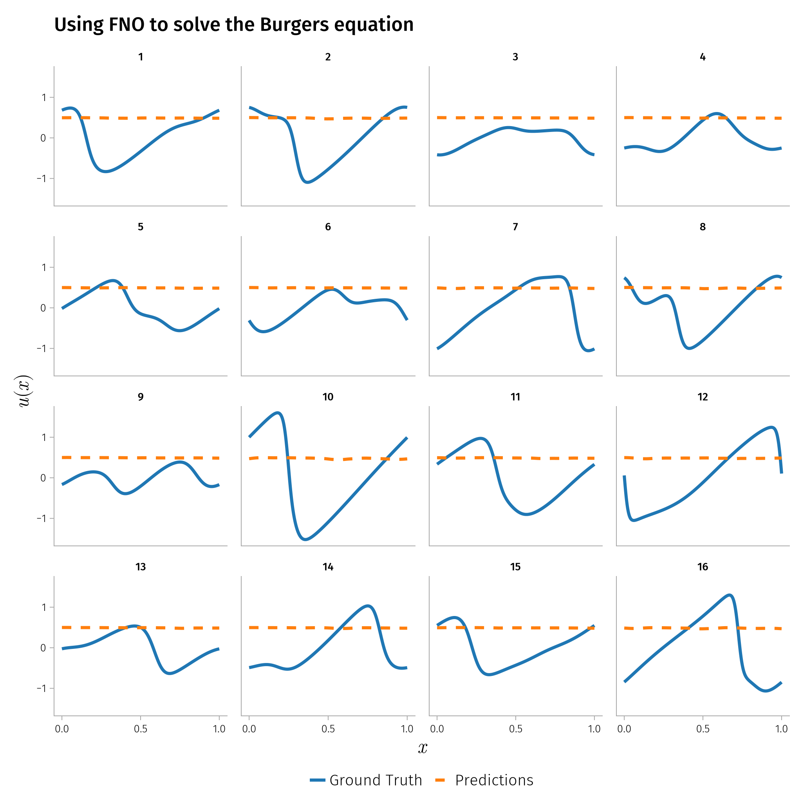

Burgers Equation using Fourier Neural Operator
Data Loading
using DataDeps, MAT, MLUtils
using Printf
register(
DataDep(
"BurgersR10",
"""
Burgers' equation dataset from
[fourier_neural_operator](https://github.com/zongyi-li/fourier_neural_operator),
mirrored at [kks32/sciml-dataset](https://huggingface.co/datasets/kks32/sciml-dataset).
mapping between initial conditions to the solutions at the last point of time \
evolution in some function space.
u(x,0) -> u(x, time_end):
* `a`: initial conditions u(x,0)
* `u`: solutions u(x,t_end)
""",
"https://huggingface.co/datasets/kks32/sciml-dataset/resolve/982685ff70965591682682dddd284d35e670ac7f/fno/burgers_data_R10.mat",
"d1a0456776255a4bd841dbc18951d3f468266d945d96e24ae531a12f18bb5a1a",
),
)
filepath = joinpath(datadep"BurgersR10", "burgers_data_R10.mat")
const N = 2048
const Δsamples = 2^3
const grid_size = div(2^13, Δsamples)
const T = Float32
file = matopen(filepath)
x_data = reshape(T.(collect(read(file, "a")[1:N, 1:Δsamples:end])), N, :)
y_data = reshape(T.(collect(read(file, "u")[1:N, 1:Δsamples:end])), N, :)
close(file)
x_data = reshape(permutedims(x_data, (2, 1)), grid_size, 1, N);
y_data = reshape(permutedims(y_data, (2, 1)), grid_size, 1, N);1024×1×2048 Array{Float32, 3}:
[:, :, 1] =
0.6834662
0.6850582
0.68663555
0.68819803
0.6897452
0.6912767
0.6927921
0.6942911
0.6957732
0.697238
⋮
0.66854095
0.6702484
0.6719444
0.6736285
0.6753004
0.6769599
0.67860657
0.68024004
0.68186
[:, :, 2] =
0.7511075
0.75031614
0.74948686
0.74862
0.7477157
0.7467743
0.7457962
0.7447817
0.74373096
0.7426446
⋮
0.75649047
0.756049
0.75556797
0.7550476
0.7544881
0.75388944
0.7532519
0.75257564
0.75186074
[:, :, 3] =
-0.41533458
-0.4158413
-0.41631535
-0.416757
-0.4171665
-0.41754422
-0.41789043
-0.41820538
-0.4184894
-0.41874272
⋮
-0.40924993
-0.4100654
-0.41084528
-0.4115898
-0.4122994
-0.41297436
-0.41361505
-0.41422176
-0.41479483
;;; …
[:, :, 2046] =
0.016046494
0.008860671
0.0016381989
-0.005616474
-0.012898825
-0.020204268
-0.02752816
-0.034865808
-0.04221249
-0.04956345
⋮
0.07838251
0.071710624
0.06496665
0.05815404
0.051276375
0.044337366
0.03734086
0.030290816
0.0231913
[:, :, 2047] =
0.36310026
0.36462003
0.36611378
0.36758128
0.36902225
0.3704365
0.37182376
0.37318385
0.37451655
0.37582165
⋮
0.34829122
0.35003418
0.35175335
0.3534485
0.35511935
0.35676563
0.3583871
0.35998356
0.36155468
[:, :, 2048] =
1.0363716
1.0398366
1.0432957
1.0467485
1.0501951
1.0536352
1.0570688
1.0604957
1.0639158
1.067329
⋮
1.0049305
1.0084454
1.0119551
1.0154597
1.0189589
1.0224527
1.025941
1.0294236
1.0329006Model
using Lux, NeuralOperators, Optimisers, Random, Reactant
const cdev = cpu_device()
const xdev = reactant_device(; force=true)
fno = FourierNeuralOperator(
(16,), 2, 1, 32; activation=gelu, stabilizer=tanh
)
ps, st = Lux.setup(Random.default_rng(), fno) |> xdev;((positional_embedding = NamedTuple(), lifting = (layer_1 = (weight = Reactant.ConcretePJRTArray{Float32, 3, 1}(Float32[-0.45048642 0.8215421;;; -0.6469188 0.5172023;;; -0.50672746 -0.2251062;;; … ;;; 0.56619805 -0.24967276;;; 0.9645864 1.0885009;;; -0.4685063 1.1935192]), bias = Reactant.ConcretePJRTArray{Float32, 1, 1}(Float32[0.159703, -0.3509462, -0.10126159, 0.39295563, 0.6632423, -0.49430946, -0.21302897, 0.3522459, -0.08633116, -0.12322027 … 0.55145764, -0.27602097, 0.05406876, -0.5174525, -0.5605669, -0.39052242, -0.57962865, 0.31826562, 0.29890722, -0.2686216])), layer_2 = (weight = Reactant.ConcretePJRTArray{Float32, 3, 1}(Float32[0.11259408 0.07066951 … 0.20654172 0.16918825;;; -0.15999952 0.115958184 … 0.08281645 -0.024991611;;; 0.16204435 0.074184105 … -0.21040425 -0.051126767;;; … ;;; 0.15478508 0.19775072 … -0.027014513 -0.041541196;;; 0.20725302 -0.07181448 … 0.19796564 -0.02747813;;; 0.105362296 -0.019454014 … -0.07874177 -0.15154172]), bias = Reactant.ConcretePJRTArray{Float32, 1, 1}(Float32[-0.07033114, 0.07001881, 0.053533047, -0.085907385, -0.05988024, -0.104506835, 0.10887393, 0.09060454, 0.054366186, 0.029574394 … -0.11592382, 0.05252181, -0.026414692, 0.03713721, 0.07035078, 0.1113888, 0.024390548, -0.053051412, 0.006304696, 0.03983806]))), fno_blocks = (layer_1 = (layer_1 = (layer_1 = (layer_1 = (weight = Reactant.ConcretePJRTArray{Float32, 3, 1}(Float32[-0.15519148 0.03921681 … -0.12586261 -0.04448573;;; 0.12898631 -0.10303989 … -0.10187342 -0.27491853;;; 0.02485181 -0.1949206 … -0.1056301 0.15868787;;; … ;;; -0.2679895 0.18788193 … 0.2659741 0.14570174;;; 0.29236 0.304122 … 0.084096484 0.1277344;;; -0.28771406 0.18056881 … -0.09567626 0.14510007]),), layer_2 = (stabilizer = NamedTuple(), conv_layer = (weight = Reactant.ConcretePJRTArray{ComplexF32, 3, 1}(ComplexF32[1.9237473f-6 + 7.424472f-7im 3.8181024f-5 + 4.1920472f-8im … -1.41254395f-5 + 2.589793f-5im -3.9501247f-5 - 4.2708165f-5im; -4.6048776f-6 - 2.4842917f-5im 3.173326f-5 - 1.3082455f-5im … 1.3464148f-7 - 3.264418f-5im 2.4696066f-5 - 1.9364239f-5im; … ; 7.859132f-6 - 2.7901795f-5im 1.137383f-5 + 4.2451866f-5im … -4.808553f-6 + 3.504172f-6im 2.4103834f-5 - 3.4355064f-5im; -1.7514505f-5 - 1.5307121f-5im 2.125866f-5 + 1.4877446f-5im … -3.6693124f-5 + 7.722751f-6im 1.3621124f-5 - 2.091149f-5im;;; 3.0947027f-5 + 2.1888836f-6im 2.616281f-5 - 1.1393273f-5im … 2.1044612f-5 + 1.8806735f-5im -3.0469748f-5 + 7.986967f-6im; 2.562538f-5 + 7.0418986f-7im -2.430677f-5 - 1.0077891f-6im … -3.3796303f-5 + 8.550557f-6im -2.3177576f-5 + 6.424405f-6im; … ; 1.662298f-5 - 3.2257103f-5im 1.8730647f-5 - 1.2708304f-5im … 3.709876f-5 - 7.4404f-6im -2.6138589f-5 - 3.6061294f-5im; -2.1732045f-5 + 2.9120318f-5im -2.8383118f-5 + 8.761518f-6im … 2.5884458f-5 + 1.8646997f-5im -2.9138459f-5 + 3.760217f-5im;;; 4.1040585f-5 - 1.831106f-5im -2.1908356f-5 - 2.6780916f-5im … -1.2723852f-5 + 1.1674805f-5im -3.6577163f-5 + 2.5657568f-5im; 4.2547355f-5 + 1.2393797f-5im -4.0737716f-5 - 2.3913346f-5im … 7.484713f-6 - 1.8676476f-5im -8.267455f-6 - 2.7839258f-5im; … ; 1.7998947f-6 - 3.450435f-5im 4.024431f-5 - 1.014248f-5im … -3.371718f-5 - 2.6209691f-5im -4.0851963f-5 + 2.3341281f-5im; 7.75395f-6 - 2.3305467f-5im 4.4481235f-6 + 9.877828f-6im … 2.074693f-6 - 3.184899f-5im -9.563455f-7 + 1.85804f-5im;;; … ;;; -7.375467f-6 - 4.1909123f-5im -3.8546077f-5 - 3.5552126f-5im … 1.7077566f-5 - 1.4537108f-5im 5.342185f-6 - 2.3648987f-5im; 1.9044906f-5 - 3.5561563f-5im -1.4634655f-5 - 2.9509853f-5im … 6.4748815f-6 + 2.2120119f-5im -4.0666724f-5 + 1.4508054f-5im; … ; -1.7519322f-5 - 3.868632f-5im -4.1690953f-5 - 1.1543416f-5im … -5.5928485f-6 - 2.3670733f-5im -3.2863732f-5 + 2.03804f-5im; -4.156761f-5 - 3.595076f-5im 1.7946186f-5 - 3.9931423f-5im … 2.0833344f-5 + 1.6231039f-5im -4.2435815f-5 + 2.019238f-5im;;; 4.082712f-5 - 3.0220293f-5im 4.222886f-5 - 2.4651436f-5im … -4.06339f-5 + 1.2106435f-5im -1.059558f-5 - 1.8672309f-6im; -4.267377f-5 + 4.237111f-6im -1.6088705f-6 + 8.346311f-6im … 1.0302991f-5 + 1.3806679f-5im 1.5434343f-5 + 2.3024537f-5im; … ; -3.9543127f-5 - 3.4909703f-5im -4.057797f-6 - 3.2823948f-5im … -1.6667467f-5 - 4.0998075f-5im -2.9792218f-5 + 1.549764f-5im; 2.3432423f-5 - 5.9088215f-6im 3.8130955f-5 + 6.8101476f-6im … -9.956246f-6 - 1.748271f-5im 2.7321807f-5 + 2.7619351f-5im;;; -2.2455708f-5 - 2.048454f-6im 3.3157226f-5 - 3.0165182f-5im … 6.3285097f-7 + 2.9042327f-5im -3.8806997f-5 - 4.117231f-5im; -2.7678065f-5 + 2.7325239f-5im -1.5235334f-5 + 6.0391876f-6im … 1.3601928f-5 + 1.984618f-5im 3.7622936f-5 - 1.6407512f-5im; … ; -4.1222364f-5 - 1.257716f-5im -3.320542f-5 + 3.5043926f-5im … 3.59991f-5 + 3.2028696f-5im 2.0768435f-5 - 3.429065f-5im; -4.1848583f-5 - 2.2637447f-5im -3.252067f-5 + 3.4002336f-5im … -4.138691f-5 - 6.0424854f-6im 3.6880214f-5 - 3.0630246f-5im]),))), layer_2 = (layer_1 = (weight = Reactant.ConcretePJRTArray{Float32, 3, 1}(Float32[0.11306852 -0.09494071 … 0.00458673 0.2769081;;; -0.021850213 -0.052134648 … 0.1691181 -0.19033004;;; -0.18775013 0.28516403 … 0.24153912 0.2923376;;; … ;;; 0.08753696 -0.0086831525 … 0.12428314 0.15478724;;; -0.03052154 -0.15229201 … 0.28737718 -0.08045661;;; 0.27243385 0.29067954 … 0.18422611 -0.068228625]), bias = Reactant.ConcretePJRTArray{Float32, 1, 1}(Float32[0.0031418367, 0.10188453, -0.12537697, 0.06675587, -0.013257144, -0.13640673, 0.15879893, 0.054921497, -0.1348415, 0.16932376, -0.12173626, 0.06348767, -0.03423934, -0.082781404, 0.13630433, -0.108549275])), layer_2 = (weight = Reactant.ConcretePJRTArray{Float32, 3, 1}(Float32[-0.22665338 -0.3400378 … 0.08706145 0.4081696;;; 0.28968003 -0.08522588 … 0.038577355 -0.041299798;;; 0.19068548 -0.28463152 … 0.33406883 0.04204296;;; … ;;; -0.3132675 0.24250282 … -0.32430583 0.1269693;;; 0.22419181 0.35890624 … 0.18207164 -0.17319195;;; 0.22345763 0.38342932 … 0.2773201 -0.09895574]), bias = Reactant.ConcretePJRTArray{Float32, 1, 1}(Float32[0.15528032, -0.12397516, 0.08258507, 0.008148372, 0.09858009, -0.004576862, 0.13227305, -0.2141046, 0.21508905, -0.23343095 … 0.17101729, 0.044703335, -0.23205146, 0.22060686, -0.1241993, 0.09057075, -0.002218455, -0.16072816, -0.021555781, -0.18396485])))), layer_2 = (weight = Reactant.ConcretePJRTArray{Float32, 2, 1}(Float32[-0.26722625 0.09803289 … 0.23878174 0.24928363]),)), layer_2 = (layer_1 = (layer_1 = (layer_1 = (weight = Reactant.ConcretePJRTArray{Float32, 3, 1}(Float32[0.08004587 -0.2757149 … 0.05531754 0.107396856;;; -0.15095755 0.16446148 … 0.15787834 0.10056594;;; -0.12946928 0.30604163 … 0.018036047 -0.078015506;;; … ;;; 0.2436746 -0.11337698 … -0.09482865 -0.0037036065;;; -0.21400957 0.17087924 … -0.024958976 -0.2102636;;; 0.024612296 -0.24273801 … -0.021588214 0.058255482]),), layer_2 = (stabilizer = NamedTuple(), conv_layer = (weight = Reactant.ConcretePJRTArray{ComplexF32, 3, 1}(ComplexF32[-1.7576089f-5 + 3.1531887f-5im -2.178723f-5 - 2.9571931f-5im … -3.103499f-6 - 3.7701157f-5im 2.1045991f-5 + 1.8796502f-5im; -3.400803f-5 - 1.8796454f-5im -8.526222f-6 - 1.45576505f-5im … -3.1589738f-5 - 1.3445817f-5im -6.7613432f-6 + 3.2984102f-5im; … ; 3.77935f-5 + 8.327609f-6im 3.9710245f-5 + 3.866684f-5im … -2.7766824f-5 - 3.777365f-6im 2.6143192f-5 + 1.4235325f-5im; -3.21809f-5 - 1.4182008f-5im 2.2923954f-5 + 3.7950653f-5im … 7.4625386f-6 - 2.9846024f-5im -1.7075441f-5 - 2.0388465f-5im;;; -2.1549016f-5 + 4.3122676f-5im 3.885362f-5 + 1.79738f-5im … -1.1516863f-5 - 2.0103233f-5im -2.6156822f-5 - 3.4310733f-6im; 4.351914f-6 + 1.7000346f-5im -1.0533049f-5 - 1.8295534f-5im … -4.1889132f-5 + 3.722431f-5im -2.153705f-5 + 2.7538978f-5im; … ; -2.0758871f-5 + 1.0862048f-5im 1.2353574f-6 - 2.1095191f-5im … 2.0901585f-7 - 2.3497587f-6im -3.859027f-5 + 3.9287937f-5im; 1.8675493f-5 - 1.9407938f-5im -3.061258f-5 + 3.988453f-5im … 1.0915766f-5 - 2.4647963f-5im -4.0029106f-5 - 2.813477f-5im;;; -1.2887911f-5 + 3.960851f-5im -3.398311f-5 + 1.5909489f-5im … -1.6840891f-5 - 1.756718f-5im 1.989643f-6 - 3.0671676f-5im; 3.4395744f-5 - 3.496985f-5im 1.5259299f-6 - 1.4007329f-5im … -5.9801037f-6 - 5.3527524f-6im 2.3289183f-5 + 2.027945f-5im; … ; -1.17841755f-5 + 6.761199f-6im -1.9914936f-5 - 2.1622604f-5im … 7.814166f-6 - 7.625611f-6im 2.455291f-5 - 4.2211876f-5im; -3.5353314f-5 - 2.392985f-5im -2.6296582f-5 - 1.7700318f-5im … -2.1154199f-7 - 2.1708744f-5im -1.5577994f-5 + 2.3166489f-5im;;; … ;;; -1.8542585f-5 + 2.538118f-6im 4.2379743f-5 - 3.1651794f-5im … 1.576575f-5 + 2.6087433f-5im -4.2068905f-6 - 3.5999747f-7im; -2.7721462f-5 + 2.4271336f-5im -1.9027399f-5 - 2.2670261f-5im … 2.734833f-5 - 1.8441999f-5im -3.864504f-6 + 1.79857f-5im; … ; 1.5493932f-5 + 2.6739443f-5im 2.3807988f-5 + 1.2750301f-5im … 1.2710994f-5 + 2.9055652f-6im 1.3150079f-5 + 1.9481939f-5im; -1.4256465f-5 + 4.2783973f-5im -5.681747f-6 - 2.619883f-5im … -3.929421f-5 - 2.6644186f-5im -4.1528154f-5 + 3.645529f-5im;;; -4.1041338f-5 + 1.1485561f-5im -1.7080947f-5 - 2.5579257f-6im … -3.6107667f-5 + 4.2644893f-5im -4.2768672f-5 - 2.6392467f-5im; 2.8093256f-5 - 3.6346253f-5im -5.552307f-6 + 1.8415132f-5im … -2.1651245f-5 + 2.6441216f-5im -3.8995204f-5 - 3.5173896f-5im; … ; -4.0399118f-5 + 1.0787643f-5im -4.024831f-5 + 3.6575253f-5im … 9.96828f-6 + 4.7944613f-6im -2.5877049f-5 - 1.61794f-5im; 1.6245835f-5 + 2.1964574f-5im -2.2915943f-5 - 8.726666f-6im … -3.6198988f-5 - 4.579076f-6im 4.24932f-6 - 2.7732343f-5im;;; -1.9710025f-5 - 2.5890322f-5im 3.5055225f-5 + 6.1626592f-6im … -1.4874663f-5 - 2.1861774f-6im 6.6427847f-6 + 6.7080578f-6im; 9.118475f-6 + 4.1738298f-5im -3.5911286f-5 + 4.0898438f-5im … 2.269246f-5 + 4.010373f-5im -5.540911f-6 - 1.2492111f-5im; … ; -3.7099584f-5 + 1.261494f-5im 4.0690666f-5 - 3.7944126f-5im … -3.8470525f-6 + 4.0421477f-5im 4.0404534f-6 + 1.1788589f-5im; -3.4465946f-5 + 2.8988938f-5im -2.0016696f-5 + 2.8102713f-5im … -2.2845707f-5 + 2.5534457f-5im 3.0404242f-5 - 3.992654f-5im]),))), layer_2 = (layer_1 = (weight = Reactant.ConcretePJRTArray{Float32, 3, 1}(Float32[-0.15283357 0.23583993 … -0.16798583 0.005778974;;; -0.30492485 0.08329239 … -0.027095117 0.1116096;;; -0.20075685 -0.1971108 … -0.045551717 0.17903098;;; … ;;; -0.08855032 -0.17230253 … -0.19003019 0.017790072;;; -0.14727323 0.24199045 … -0.007359106 -0.26266348;;; -0.30109015 0.05572032 … 0.054540124 0.17849751]), bias = Reactant.ConcretePJRTArray{Float32, 1, 1}(Float32[-0.17645743, 0.096673004, 0.11225674, 0.11067301, 0.17134006, 0.123067744, -0.10854124, 0.017893909, -0.13743314, -0.09237544, -0.017989434, 0.09168463, 0.015791897, -0.16021779, 0.11211679, -0.122612745])), layer_2 = (weight = Reactant.ConcretePJRTArray{Float32, 3, 1}(Float32[0.09433882 0.42526373 … 0.33682358 -0.31651193;;; -0.15883683 0.038021676 … 0.057269365 -0.35315865;;; 0.40136573 -0.103728294 … -0.28516972 -0.2486246;;; … ;;; -0.30100456 -0.34606373 … 0.20537008 -0.290084;;; 0.31450155 -0.37467518 … -0.13156639 0.22070329;;; 0.22435245 0.15107821 … 0.14122795 0.1747459]), bias = Reactant.ConcretePJRTArray{Float32, 1, 1}(Float32[-0.0072006583, 0.14925969, 0.0390113, -0.10223663, 0.2381213, -0.1569022, 0.115956366, -0.13106886, -0.23001942, 0.059086323 … 0.06210494, 0.13298455, 0.1716491, -0.21588913, 0.03526342, 0.105377704, -0.18904746, 0.0028511584, -0.1472426, -0.24608746])))), layer_2 = (weight = Reactant.ConcretePJRTArray{Float32, 2, 1}(Float32[-0.28504488 0.27378538 … 0.19929509 0.17291225]),)), layer_3 = (layer_1 = (layer_1 = (layer_1 = (weight = Reactant.ConcretePJRTArray{Float32, 3, 1}(Float32[0.20224383 0.30429968 … 0.11955541 0.23232342;;; -0.031039223 0.118525155 … -0.2963487 -0.27195686;;; -0.16330275 0.105522566 … -0.30596742 -0.031536978;;; … ;;; -0.16481528 0.23382318 … 0.26429492 0.29160932;;; 0.090146 0.012240174 … -0.15922567 -0.28099555;;; 0.15669882 -0.29040548 … -0.27592134 0.07088909]),), layer_2 = (stabilizer = NamedTuple(), conv_layer = (weight = Reactant.ConcretePJRTArray{ComplexF32, 3, 1}(ComplexF32[3.716211f-5 - 4.101903f-5im 8.195911f-6 - 3.989248f-5im … 4.2085787f-5 - 2.7248045f-5im 6.704755f-6 - 3.881541f-5im; 2.3597058f-5 + 2.783946f-5im -4.3127344f-5 - 1.522435f-5im … 9.074281f-6 - 3.0288931f-5im 8.704544f-6 + 1.0523721f-5im; … ; 1.6283722f-5 - 1.5916032f-5im 3.373704f-5 + 3.9528608f-5im … -2.8907541f-5 + 2.2606515f-5im 3.0103232f-5 - 1.0067283f-5im; 3.1491238f-6 + 1.5876829f-5im 2.5606922f-5 - 1.9700441f-5im … 8.832517f-6 - 5.7418906f-6im 2.72511f-5 + 3.4557623f-5im;;; -4.296406f-5 - 3.9194998f-5im -2.8424165f-5 - 2.4772962f-5im … -2.010985f-5 + 2.7677941f-5im -2.1415959f-5 - 3.9578288f-5im; 2.3374301f-5 - 4.221364f-5im -2.3232416f-5 + 5.9068097f-6im … -2.7899927f-5 - 3.3109543f-5im 1.5795962f-6 - 2.1546444f-5im; … ; 1.341378f-5 - 2.0006983f-5im 1.7277769f-5 - 2.6807907f-6im … 1.11294175f-5 + 6.7589253f-6im -2.0081388f-6 - 4.668957f-6im; 1.5496875f-5 + 3.2094167f-6im 6.6565317f-6 - 1.0648608f-5im … -2.0621961f-5 + 1.1226728f-5im -2.9411662f-5 + 9.840538f-6im;;; 3.3214415f-5 - 3.8712642f-7im -1.2686037f-5 + 4.247288f-5im … 4.019815f-5 + 3.7780374f-5im -3.7662936f-5 - 3.7394275f-5im; 3.6897312f-5 + 2.8932118f-5im -3.1035685f-5 - 3.4925422f-5im … 3.3747736f-5 + 3.9127248f-5im 2.6916206f-5 + 4.0078925f-5im; … ; 1.7412076f-5 - 2.1049089f-5im -1.4242527f-5 - 3.6461345f-6im … -1.9666599f-5 + 1.9922838f-5im 2.9315499f-5 + 2.9195084f-5im; 4.224918f-6 + 1.880326f-5im 3.144257f-5 + 1.0999921f-5im … -3.529994f-6 - 1.991328f-5im 2.3592367f-5 + 1.8628254f-5im;;; … ;;; -3.1473566f-5 + 2.6152222f-5im 4.0037485f-5 - 1.512439f-5im … -2.5529274f-5 + 4.4500216f-6im 3.9185754f-5 + 1.9562913f-5im; 8.952856f-6 + 2.4436065f-6im 1.961355f-5 + 1.8633738f-5im … 2.355752f-5 - 2.8647966f-5im 2.1981825f-5 - 1.826892f-5im; … ; 6.571029f-6 + 1.2799769f-5im 6.939006f-6 + 4.100348f-5im … 3.765342f-5 - 3.8037593f-5im 2.2140297f-5 + 1.677393f-5im; -4.5227807f-6 - 3.3036606f-5im 3.1955306f-6 + 2.3778046f-5im … -4.1109706f-5 + 4.441934f-7im 3.983247f-5 - 4.2716834f-5im;;; -3.237977f-5 - 7.954224f-6im -2.09483f-5 - 2.780615f-5im … -4.0985175f-5 - 2.7570377f-6im 2.2966678f-5 + 2.894194f-5im; -1.3113287f-5 + 1.8125136f-5im -1.46182165f-5 + 2.8634852f-6im … 1.9760142f-5 + 3.8022616f-5im 1.48293575f-5 - 3.3600078f-5im; … ; -1.2009356f-5 - 1.46695265f-5im -4.1412168f-5 - 9.290782f-6im … 2.2827298f-5 + 1.916573f-5im -8.98887f-6 + 3.0416648f-5im; 1.4956755f-5 + 4.25064f-5im -3.1056876f-5 + 2.9340961f-5im … -8.170603f-6 - 1.8859166f-5im -3.5825156f-5 - 2.9782259f-5im;;; 3.169369f-5 - 2.9795126f-6im -2.9774304f-5 - 2.9473726f-5im … 2.3461728f-6 + 4.2148324f-5im -3.3719054f-5 - 1.46119755f-5im; -1.4586107f-5 + 8.262825f-6im 4.309181f-6 + 2.730785f-5im … -2.0692858f-5 + 2.1180993f-5im -3.9462924f-5 + 2.4511794f-5im; … ; 1.5754149f-5 - 3.2136458f-7im -4.507773f-6 - 9.507582f-7im … -2.9992992f-5 - 2.657758f-5im -1.8442755f-5 - 2.0578744f-5im; 3.8598002f-5 + 5.410324f-6im 2.1895637f-5 + 1.5468388f-5im … -3.3849217f-5 - 2.109012f-5im 1.4964385f-5 - 3.69626f-5im]),))), layer_2 = (layer_1 = (weight = Reactant.ConcretePJRTArray{Float32, 3, 1}(Float32[-0.03983848 0.19607632 … -0.008741114 0.29659045;;; 0.19948426 0.05835575 … 0.18548733 -0.025122898;;; 0.122004874 0.05456425 … 0.2369841 0.20411663;;; … ;;; -0.2062294 -0.29174805 … -0.12341856 0.09417242;;; 0.265215 0.24679036 … 0.24224252 -0.2040529;;; -0.25798193 0.30339515 … -0.10822388 -0.04247606]), bias = Reactant.ConcretePJRTArray{Float32, 1, 1}(Float32[0.17644188, -0.015626429, 0.0051075025, -0.13385877, 0.1387758, -0.054379024, -0.13689122, 0.08329212, -0.120442666, 0.13259022, -0.1731755, -0.1393216, -0.020477047, -0.07313665, -0.122828096, -0.07236175])), layer_2 = (weight = Reactant.ConcretePJRTArray{Float32, 3, 1}(Float32[-0.116968036 -0.41951877 … 0.014586019 0.2112655;;; -0.2294085 -0.38947496 … 0.07447402 -0.4047335;;; -0.2931729 0.02447795 … -0.24075744 0.3872833;;; … ;;; -0.3733018 0.24538384 … 0.12744063 0.4234627;;; 0.23478365 0.00589124 … -0.1704055 0.31815884;;; 0.08882342 0.36547762 … 0.27109545 -0.2221812]), bias = Reactant.ConcretePJRTArray{Float32, 1, 1}(Float32[-0.034669995, 0.09541288, 0.127505, -0.24526429, 0.23563218, -0.16610855, 0.17962897, -0.13025218, 0.08740431, 0.14996877 … 0.1947349, -0.16076627, -0.17180067, 0.049119025, -0.09261748, -0.029668152, 0.07338387, -0.015861958, -0.05979511, -0.027300924])))), layer_2 = (weight = Reactant.ConcretePJRTArray{Float32, 2, 1}(Float32[-0.30119717 -0.13142028 … -0.3045292 -0.3208088]),)), layer_4 = (layer_1 = (layer_1 = (layer_1 = (weight = Reactant.ConcretePJRTArray{Float32, 3, 1}(Float32[-0.24239708 -0.12292884 … -0.26763082 -0.15369464;;; 0.051489104 -0.18802202 … -0.19783135 0.3035818;;; -0.14299795 -0.18846948 … 0.10985664 -0.072139956;;; … ;;; 0.27763632 -0.1436563 … -0.2264389 -0.13123137;;; -0.18255487 -0.2677296 … -0.04587657 0.15047394;;; 0.18303156 -0.058275923 … 0.05013783 0.053699046]),), layer_2 = (stabilizer = NamedTuple(), conv_layer = (weight = Reactant.ConcretePJRTArray{ComplexF32, 3, 1}(ComplexF32[3.901444f-5 + 1.2858591f-5im -2.649129f-5 + 1.7928714f-5im … 2.7028662f-5 - 1.8799547f-5im -2.9957462f-5 - 2.9009656f-5im; 9.575309f-6 + 2.6315995f-5im 1.4272974f-6 + 3.615276f-5im … -3.9796498f-5 + 2.7166967f-5im -6.765315f-6 + 4.2624884f-5im; … ; 3.553974f-5 - 3.5760459f-6im 1.8645082f-5 + 4.815761f-7im … 2.7519565f-5 - 6.103051f-6im -1.0919682f-5 + 1.3108493f-5im; -1.7720207f-5 + 6.575917f-6im -1.3564942f-5 - 3.6887872f-5im … 2.8495293f-5 + 9.847113f-6im 1.3165077f-6 + 2.459499f-6im;;; -3.4985584f-5 + 8.589684f-6im 1.0816033f-5 - 3.2890573f-5im … -1.9811385f-7 + 3.4687557f-5im 3.0620075f-5 + 3.88132f-5im; 3.6645877f-5 - 3.017489f-5im 3.889225f-5 + 3.5019195f-5im … -2.5606165f-5 + 2.8530469f-5im -8.951781f-6 - 1.7129529f-5im; … ; -3.709836f-5 + 3.2554526f-5im 8.598163f-6 + 1.6993376f-5im … 2.8613207f-5 - 2.0102127f-5im -3.5698056f-5 + 2.4091112f-5im; -2.4847706f-5 - 7.963285f-6im 2.8371682f-5 - 2.6293454f-5im … 2.988267f-5 + 6.038853f-6im -1.6876591f-5 - 3.603007f-5im;;; 3.1628766f-5 - 2.0174099f-5im 8.25875f-6 - 3.786399f-5im … 4.120464f-5 + 1.988223f-5im -2.461063f-6 - 3.47132f-5im; -2.3746214f-5 + 2.029074f-5im -1.9721454f-6 + 3.6631634f-5im … 3.951858f-5 + 5.594104f-6im 3.217977f-5 + 1.2366787f-5im; … ; -1.870505f-5 - 3.7012695f-5im 2.6057258f-5 - 2.7921396f-5im … -1.4684205f-5 - 3.1941518f-6im 3.8806444f-5 - 2.3855331f-5im; 2.5645199f-5 - 2.2892287f-5im 2.225614f-5 - 3.995613f-5im … -2.285278f-6 + 1.571726f-5im -2.4693773f-6 - 4.0294635f-5im;;; … ;;; 1.1252611f-5 - 3.4774526f-5im -3.3066724f-5 + 2.1100182f-5im … 1.8222729f-5 - 2.2525637f-5im -3.1539745f-5 - 6.497596f-6im; 2.1451367f-6 + 3.9762414f-5im 1.8884437f-5 + 3.931628f-5im … -2.021533f-5 - 1.4953878f-5im -7.870919f-6 - 3.0781033f-5im; … ; 1.2708571f-6 + 1.3163996f-6im 1.6381717f-5 + 2.6435133f-5im … -3.7925125f-5 - 1.4726182f-5im 1.6361868f-5 - 2.5210034f-5im; 1.025627f-5 - 3.830559f-5im 1.1872199f-5 + 4.2776344f-5im … 1.8223947f-5 - 4.0072635f-5im 2.8379774f-5 - 6.295768f-6im;;; 2.9944435f-5 + 4.025813f-5im 2.652861f-5 - 1.8905712f-5im … 1.5786007f-5 + 3.2170163f-5im 3.4389705f-5 - 2.2613163f-5im; 9.9718245f-6 + 3.7320588f-5im 2.8703418f-5 + 3.3462544f-5im … 3.4424498f-5 + 4.2485176f-6im -2.349021f-5 - 2.5482055f-5im; … ; 1.2498943f-5 + 3.09275f-5im 1.8824468f-5 - 1.0870666f-5im … 2.1247763f-5 - 2.1635395f-5im -3.3682005f-5 - 1.2115006f-6im; 1.9849875f-5 + 1.5188423f-5im -9.790936f-6 + 2.3507142f-5im … -2.0084666f-5 - 2.718202f-5im 1.685343f-5 + 8.705264f-6im;;; 2.6307556f-5 + 2.3719533f-5im 8.914002f-6 + 2.615834f-5im … -2.9769335f-5 - 2.89585f-5im 3.672716f-5 + 1.6578795f-5im; -9.96419f-7 + 2.6990914f-5im -4.1550462f-5 - 2.5966872f-6im … 4.023642f-5 + 3.1314306f-7im 2.4212402f-5 + 6.3076627f-6im; … ; 1.9320023f-5 - 4.1541094f-5im 3.0742678f-5 + 1.6957069f-5im … 3.0408812f-5 + 4.076835f-5im -2.125043f-5 - 1.721457f-5im; 3.653034f-5 + 1.0569608f-5im -3.3109827f-5 + 3.3647833f-5im … 2.1424803f-5 + 1.6985632f-5im -3.3556018f-5 + 8.434813f-6im]),))), layer_2 = (layer_1 = (weight = Reactant.ConcretePJRTArray{Float32, 3, 1}(Float32[-0.17263411 0.043085508 … 0.03260647 0.19657122;;; 0.06888782 -0.10384348 … -0.28587458 0.20805295;;; 0.0020898944 0.18421161 … -0.14756325 -0.21304844;;; … ;;; -0.23145278 -0.23087166 … -0.25777978 0.26293257;;; 0.06696138 0.15810463 … -0.047206238 -0.19466682;;; 0.11592762 -0.045648187 … -0.09385318 0.022985846]), bias = Reactant.ConcretePJRTArray{Float32, 1, 1}(Float32[0.106933236, -0.16910672, 0.14011627, -0.1304469, 0.12474412, 0.033216204, -0.08576646, -0.023677994, -0.047915425, -0.11245662, 0.09184422, 0.016340585, 0.022177124, -0.1632185, 0.048346188, 0.040631626])), layer_2 = (weight = Reactant.ConcretePJRTArray{Float32, 3, 1}(Float32[-0.22070241 0.30142298 … 0.35748792 0.41164687;;; -0.38684866 -0.38444337 … -0.3122665 -0.2486598;;; -0.044328347 0.10726601 … 0.20341718 0.39745396;;; … ;;; 0.32402688 0.0043083397 … 0.102944665 -0.21082422;;; 0.4282386 0.22701642 … -0.2626183 -0.31005237;;; -0.36259598 -0.17238592 … 0.07023377 -0.14860287]), bias = Reactant.ConcretePJRTArray{Float32, 1, 1}(Float32[-0.20234892, -0.017347097, -0.040958226, -0.20707354, 0.073229045, -0.09003842, -0.016992807, 0.12758362, 0.029405802, 0.22385916 … -0.07426581, -0.13049698, -0.12669426, -0.10751408, 0.24238503, -0.10711083, 0.13574186, 0.12271884, 0.12006426, 0.13558432])))), layer_2 = (weight = Reactant.ConcretePJRTArray{Float32, 2, 1}(Float32[0.100846544 0.14981501 … -0.34763628 -0.39044058]),))), projection = (layer_1 = (weight = Reactant.ConcretePJRTArray{Float32, 3, 1}(Float32[0.26094767 0.11135319 … -0.18765104 -0.10855315;;; 0.016792558 -0.00013950393 … 0.07354708 -0.17105886]), bias = Reactant.ConcretePJRTArray{Float32, 1, 1}(Float32[0.08591374, 0.08166262])), layer_2 = (weight = Reactant.ConcretePJRTArray{Float32, 3, 1}(Float32[-1.1565499 -0.25906837;;;]), bias = Reactant.ConcretePJRTArray{Float32, 1, 1}(Float32[0.5660475])))), (positional_embedding = NamedTuple(), lifting = (layer_1 = NamedTuple(), layer_2 = NamedTuple()), fno_blocks = (layer_1 = (layer_1 = (layer_1 = (layer_1 = NamedTuple(), layer_2 = (stabilizer = NamedTuple(), conv_layer = NamedTuple())), layer_2 = (layer_1 = NamedTuple(), layer_2 = NamedTuple())), layer_2 = NamedTuple()), layer_2 = (layer_1 = (layer_1 = (layer_1 = NamedTuple(), layer_2 = (stabilizer = NamedTuple(), conv_layer = NamedTuple())), layer_2 = (layer_1 = NamedTuple(), layer_2 = NamedTuple())), layer_2 = NamedTuple()), layer_3 = (layer_1 = (layer_1 = (layer_1 = NamedTuple(), layer_2 = (stabilizer = NamedTuple(), conv_layer = NamedTuple())), layer_2 = (layer_1 = NamedTuple(), layer_2 = NamedTuple())), layer_2 = NamedTuple()), layer_4 = (layer_1 = (layer_1 = (layer_1 = NamedTuple(), layer_2 = (stabilizer = NamedTuple(), conv_layer = NamedTuple())), layer_2 = (layer_1 = NamedTuple(), layer_2 = NamedTuple())), layer_2 = NamedTuple())), projection = (layer_1 = NamedTuple(), layer_2 = NamedTuple())))Training
dataloader = DataLoader((x_data, y_data); batchsize=128, shuffle=true) |> xdev;
function train_model!(model, ps, st, dataloader; epochs=1000)
train_state = Training.TrainState(model, ps, st, Adam(0.0001f0))
for epoch in 1:epochs
loss = -Inf
for data in dataloader
(_, loss, _, train_state) = Training.single_train_step!(
AutoEnzyme(), MAELoss(), data, train_state; return_gradients=Val(false)
)
end
if epoch % 100 == 1 || epoch == epochs
@printf("Epoch %d: loss = %.6e\n", epoch, loss)
end
end
return train_state.parameters, train_state.states
end
ps_trained, st_trained = train_model!(fno, ps, st, dataloader; epochs=2)Epoch 1: loss = 6.048097e-01
Epoch 2: loss = 5.836969e-01Plotting
using CairoMakie, AlgebraOfGraphics
const AoG = AlgebraOfGraphics
AoG.set_aog_theme!()
x_data_dev = x_data |> xdev;
y_data_dev = y_data |> xdev;
grid = range(0, 1; length=grid_size)
pred = first(
Reactant.with_config(;
convolution_precision=PrecisionConfig.HIGH,
dot_general_precision=PrecisionConfig.HIGH,
) do
@jit(fno(x_data_dev, ps_trained, st_trained))
end
) |> cdev
data_sequence, sequence, repeated_grid, label = Float32[], Int[], Float32[], String[]
for i in 1:16
append!(repeated_grid, repeat(grid, 2))
append!(sequence, repeat([i], grid_size * 2))
append!(label, repeat(["Ground Truth"], grid_size))
append!(label, repeat(["Predictions"], grid_size))
append!(data_sequence, vec(y_data[:, 1, i]))
append!(data_sequence, vec(pred[:, 1, i]))
end
plot_data = (; data_sequence, sequence, repeated_grid, label)
draw(
AoG.data(plot_data) *
mapping(
:repeated_grid => L"x",
:data_sequence => L"u(x)";
color=:label => "",
layout=:sequence => nonnumeric,
linestyle=:label => "",
) *
visual(Lines; linewidth=4),
scales(; Color=(; palette=:tab10), LineStyle = (; palette = [:solid, :dash]));
figure=(;
size=(1024, 1024),
title="Using FNO to solve the Burgers equation",
titlesize=25,
),
axis=(; xlabelsize=25, ylabelsize=25),
legend=(; label=L"u(x)", position=:bottom, labelsize=20),
)